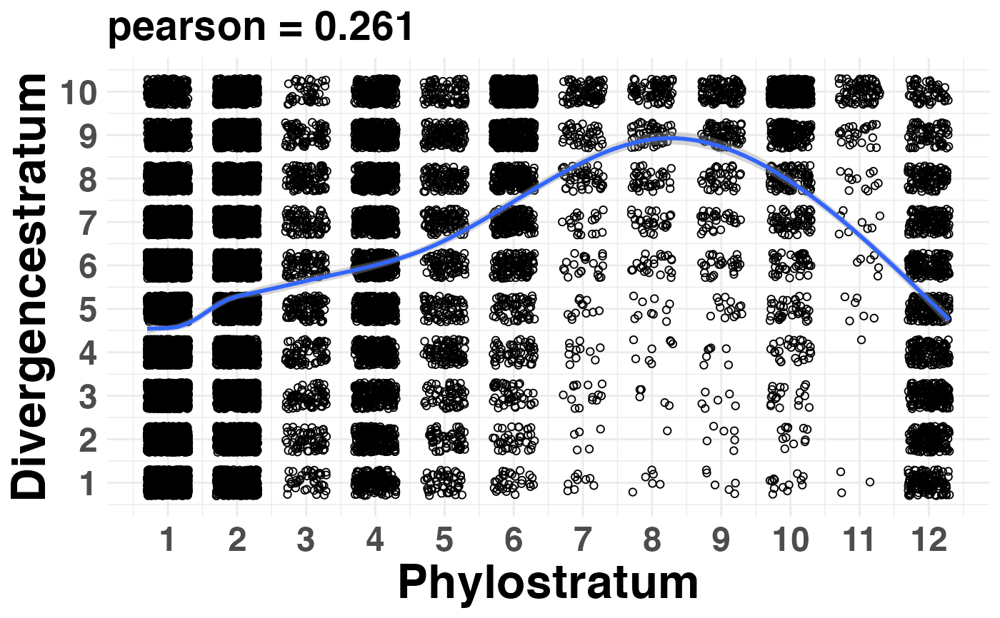

Plot the Correlation Between Phylostrata and Divergence Strata
Source:R/PlotCorrelation.R
PlotCorrelation.RdThis function plots the correlation coefficient between phylostratum values and divergence-stratum values of a given PhyloExpressionSet and DivergenceExpressionSet.
This function can be used to test whether a given PS distribution and DS distribution are linear correlated so that the independence of PS and DS can be assumed for subsequent analyses (Quint et al., 2012).
Usage
PlotCorrelation(
PhyloExpressionSet,
DivergenceExpressionSet,
method = "pearson",
linearModel = FALSE,
xlab = "Phylostratum",
ylab = "Divergencestratum"
)Arguments
- PhyloExpressionSet
a standard PhyloExpressionSet object.
- DivergenceExpressionSet
a standard DivergenceExpressionSet object.
- method
a character string specifying the correlation method to cbe used, e.g. "pearson", "kendall", "spearman".
- linearModel
a boolean value specifying whether a linear model should be fitted to the data and furthermore, should be visualized in the corresponding plot.
- xlab
label of x-axis.
- ylab
label of y-axis.
References
Quint M et al. (2012). A transcriptomic hourglass in plant embryogenesis. Nature (490): 98-101. Drost HG et al. (2015) Evidence for Active Maintenance of Phylotranscriptomic Hourglass Patterns in Animal and Plant Embryogenesis. Mol Biol Evol. 32 (5): 1221-1231 doi:10.1093/molbev/msv012.
Examples
# read standard phylotranscriptomics data
data(PhyloExpressionSetExample)
data(DivergenceExpressionSetExample)
# plot the PS and DS correlation
PlotCorrelation(PhyloExpressionSetExample,
DivergenceExpressionSetExample,
method = "pearson",
linearModel = TRUE)
#> `geom_smooth()` using formula = 'y ~ s(x, bs = "cs")'
